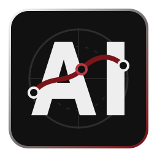

Current Role
Full Stack Developer at gistec, Apr 2026 to present, Amman, Jordan.

Ahmad Issa Full Stack DeveloperFull Stack Developer
I build web applications and APIs with React, TypeScript, .NET, and Node.js. My experience spans GIS application development, AI agents, and workflow automation.
I develop web applications, APIs, and database workflows using React, TypeScript, ASP.NET Core, Node.js, SQL Server, and PostgreSQL. My work includes bilingual interfaces, automated tests, GIS integrations, and release support.
I have extensive experience applying AI tools and models, coordinating coding agents, and automating workflows. I use OpenAI Codex, Claude Code, and Antigravity with structured prompts, shared context, code review, and test-based verification.
My background at the Esri Support Center EMEA connects development with enterprise troubleshooting, customer communication, and operational requirements.
Full Stack Developer at gistec, Apr 2026 to present, Amman, Jordan.
Bachelor of Science in Computer Engineering, United Arab Emirates University, 2020 to 2024.
Six web course and ArcGIS Lab completion certificates, earned during my support role.
Develop React and TypeScript applications, ASP.NET Core APIs, SQL Server workflows, and custom ArcGIS widgets. Recent work includes a bilingual audit console, C#/.NET desktop improvements, application security assessments, and release verification.
Created a React test suite with 458 passing tests across 19 files and 97.44% statement coverage in the recorded local run. Coordinate AI agents across implementation, testing, and documentation.
Supported ArcGIS Online and ArcGIS Enterprise customers at the Esri Support Center EMEA (Europe, the Middle East, and Africa). Diagnosed service, data, configuration, and access issues using logs and API responses, with SLA-based prioritization and escalation.
Received multiple Excellent customer satisfaction survey ratings. Prepared root-cause guidance and knowledge-sharing material on ArcGIS Enterprise stability and antivirus configuration.
Developed responsive interfaces, custom widgets, dashboard views, and REST API integrations for enterprise web and GIS workflows.
Co-authored the IEEE-published paper Evaluating a Virtual Assistant's Effectiveness in Enhancing in-Vehicle Safety: A Comparative Study for ASET 2025 and contributed to a smart city optimization platform using IoT and machine learning concepts.
Multiple Excellent customer satisfaction (CSAT) survey ratings during my time at Esri Support Center EMEA.
“Ahmad saved us a lot of time by identifying the issue so quickly! Thanks!”
“I was able to implement the solution on my own after a few emails”
“he provided clarity and communicated how this was being logged and worked on going forward.”
React storefront and NestJS APIs for product discovery, branch inventory, and validated checkout.
Bilingual activity history combining portal webhooks and audit records through .NET APIs and a React console.
458 passing tests across 19 files, 97.44% statement coverage, and 13 defects reported to the application team.
C# and WPF improvements for asset records, ArcGIS attachments, full-data searches, and Excel exports.
React and TypeScript widgets connecting request workflows, status counts, map filters, and PDF certificates.
Excel-backed directory for 2,208 organizations, with comparison, shortlists, and printable meeting briefs.
Coordinated coding agents and AI systems for implementation, testing, research, review, and documentation.
Enterprise diagnostics and case ownership, recognized through multiple Excellent customer satisfaction surveys.
Co-authored research comparing multimodal interfaces for in-vehicle safety.
IoT and machine learning concepts for environmental sensing and urban planning.
Computer vision and motor control for line following and obstacle avoidance.
Responsive portfolio with project filters, reusable dialogs, course certificates, and CV downloads.
Contact me about full stack development, GIS applications, API integrations, or AI-assisted engineering workflows.